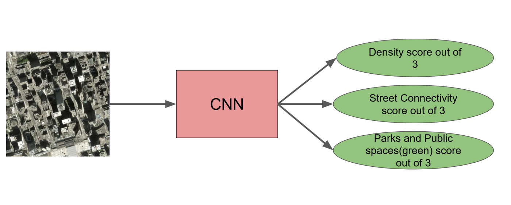
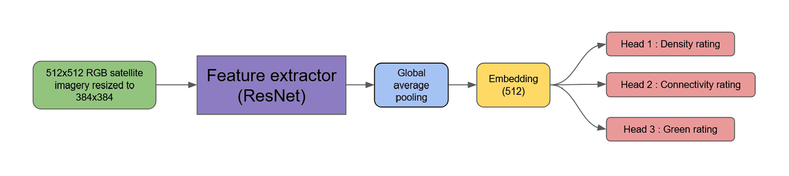
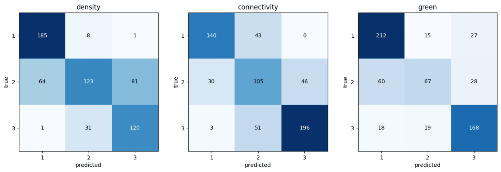
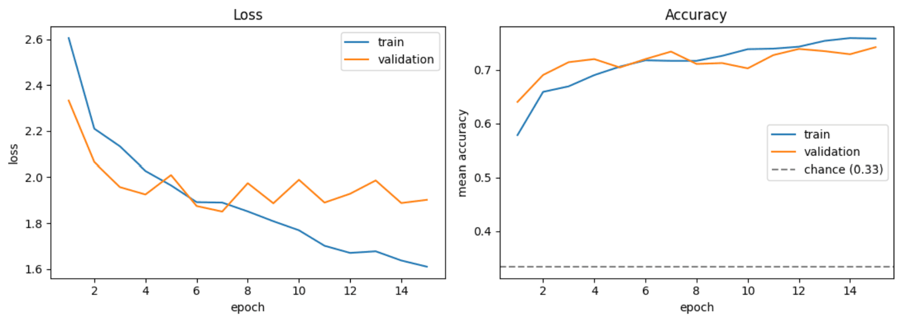
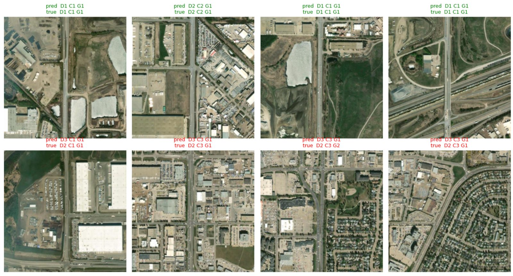

Rating cities from satellite images
APS360 Applied Fundamentals of Deep Learning, 2026. Individual project.
Python, PyTorch, ResNet-18, OpenStreetMap, Google Colab
Give the model a satellite image of about 0.8 km² of a Canadian city and it rates three things from 1 to 3: building density, street connectivity, and green or public space. The idea is a quick first read of an area for urban planners, before anyone opens a map or makes a site visit.

Data
I cut five cities (Toronto, Montreal, Vancouver, Ottawa and Calgary) into standard zoom-15 map tiles of Esri World Imagery. The labels came from OpenStreetMap: building footprint area for density, intersections per km² for connectivity, and green space area for the third rating. Each metric was split into three levels, with the cutoffs set on the training set only. Loading a whole province's OpenStreetMap extract ran out of memory, so I cut each extract down to the city first.
After removing tiles of open water, low-quality images and tiles with no roads at all, 2,488 of the 3,188 tiles were usable: 2,084 for training and 404 for validation. Edmonton was kept out completely as the test city (614 tiles) and labelled with the same cutoffs, so not even the rating scale was influenced by it.
Model
With only about 2,000 training tiles, a CNN trained from scratch would overfit, so I started from a ResNet-18 pretrained on ImageNet. Everything up to layer3 is frozen and only layer4 is fine-tuned, which leaves 8.6M trainable parameters and 2.8M frozen. Global average pooling turns the final feature maps into a 512-value embedding that feeds three separate heads, one per rating. Each head is 512 → 128 → ReLU → dropout (0.5) → 3.

Training used the sum of the three cross-entropy losses, Adam with a learning rate of 1e-4 for the backbone and 1e-3 for the heads, weight decay of 1e-4, batches of 16 and 15 epochs. Tiles were augmented with flips, 90° rotations and colour jitter, and fed in at 384×384.
Results on Edmonton
Mean accuracy on the unseen city was 0.714, compared with 0.743 on validation, so the model lost only three points moving to a city it had never seen. It beat a random forest trained on hand-made colour and texture features in every category, and it was almost never off by two levels.
| Rating | CNN | Random forest | Most common class | CNN within one level |
|---|---|---|---|---|
| Density | 0.697 | 0.648 | 0.316 | 0.997 |
| Connectivity | 0.718 | 0.542 | 0.298 | 0.995 |
| Green space | 0.728 | 0.591 | 0.414 | 0.927 |
| Mean | 0.714 | 0.594 | 0.343 | 0.973 |


What I learned
Input resolution mattered more than anything else I changed. Going from 224×224 to 384×384 raised validation accuracy to 0.743 and shrank the gap between training and validation accuracy from 0.135 to 0.02. At 224 the details that separate the levels, like intersections and narrow streets, were lost, and the model made up for it by memorizing.
The middle rating is the hard one, with accuracies of 0.46, 0.58 and 0.43 across the three categories. Levels 1 and 3 are open-ended, while level 2 picks up noise from both sides of its range. The most common single error was rating a density-2 tile as 3.

The labels have limits too. OpenStreetMap is mapped by volunteers and coverage is uneven, so a low green score can mean an under-mapped area rather than a less green one. And every rating is relative to the five training cities, so the model would give confident but meaningless answers for a US city or one without a street grid.
Code
- train_cnn.ipynb The Colab notebook: dataset, model, training, the Edmonton test and the figures on this page.